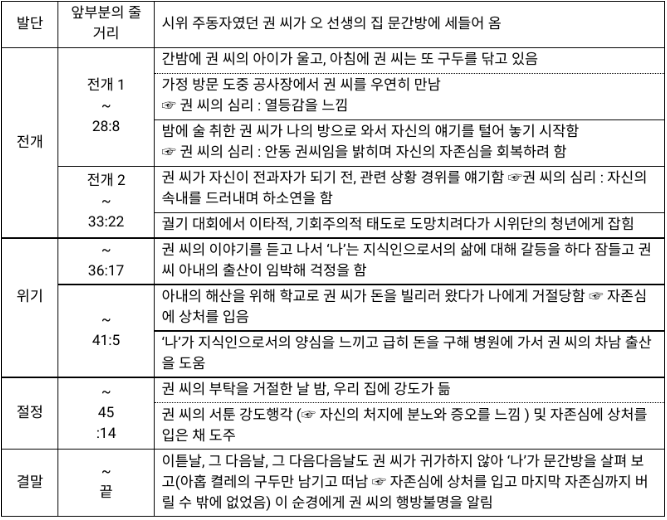

아홉켤레의 구두로 남은 사내
저자:윤흥길
광주 대단지 사건이란?
1971년 8월 10일, 경기도 광주 대단지 주민 5만 여명이 정부의 무계획적이고 졸속한 도시화에 반발하여 일어난 대규모 시위로,
당시 도시적 갈등 문제를 알리는 신호탄이 되었다. 입주민의 생업 대책도 마련하지 않은 채 자급자족 도시로 키우겠다는 정부의 선전만 믿고 전국 각지에서 몰려든 주민들이 실업 상태에 빠지고,
도시 투기를 둘러싼 각종 사기, 협잡 그리고 폭력, 절도 등의 범죄 행위가 급증했다.이에 입주민들이 이러한 불합리한 정책을 시정하라는 요구를 하고 나선 것이다.
주요 인물
나(오선생): 교사이다. 이책의 서술자이자 귄씨를 두고 경계와 연민 사이에서 갈등한다.자신의 삶의 평안을 유지하고 싶어한다.
권씨: 오선생의 집에 세들어 사는 인물. 출판사 일을 때려치고 정부의 입주권을 샀다가 가난해졌다. 가난한 생활 속에서도 늘 구두를 깨끗하게 닦아 놓으며 끝까지 자존심을 잃지 않으려고 노력한다.
아내: 평범한 소시민적인 가정 주부로 개인적이다.
의사: 사람보다는 돈을 우선시한다. 제일 쓰래기
구성단계
발단 : 권 씨가 '나'의 집 문간방에 전세로 입주함.
전개 : 생활 능력이 부족한 전과자이면서도 구두에 대한 정성히 가득한 권 씨
위기 : 아내의 입원비를 빌리려는 권 씨의 청을 거절했다가 나중에 권 씨 모르게 돕게 됨.
절정 : 권 씨가 '나'의 집에 강도로 침입했다가 자존심만 상한 채 나감.
결말 : 아홉 켤레의 구두만 남기고 권 씨가 행방 불명됨.
특징
구두의 의미: 가난하지만 자존심은 잃지 않겠다는 의지,
자신의 현실에 대한 부정 + 지식인으로서의 마지막 자존심의 표현이자 욕망
'아홉 켤레의 구두'는 권 씨의 부재를 상징하며, 동시에 소외된 서민들의 상처 입은 자존심을 상징한다고 할 수 있다.
그것에 비하면 '열 켤레의 구두'는 자신은 하층민이 아니고 지식인이라는 권 씨의 마지막 남은 자존심을 상징한다고 볼 수 있다.
권씨의 어설픈 강도 행각 : 권씨의 성격 간접 제시
권씨가 ‘나 이래뵈도 대학 나온 사람이오’라는 말을 자꾸만 되뇌이는 이유:
비록 가난하여 자존심이 땅에 떨어지는 참담한 생활을 하고 있지만, 결코 자존심을 잃지 않겠다는 의지의 표명으로 볼 수 있으며, 아울러 생활적 무능에 대한 콤플렉스의 표현이기도 하다.
상징적인 사물을 통해 등장인물의 내면을 드러내었다.
열린결말이다.
내용

난소공과의 공통점과 차이점
| 난소공 | 아홉켤레 |
| 공통점 | 난장이가 쏘아올린 작은 공과 아홉 켤레의 구두로 남은 사내는 모두 1970년대를 배경으로 하고 있으며,광주 대단지 사건을 모티브로 쓰여졌다.
가난한 사람들의 고통과 그들이 저항 없이는 자립하기 어렵게 만드는 사회를 비판하고 모두가 재정적 어려움 없이 행복한 세상을 기원하는 작가들의 바람이 잘 드러난다. |
| 차이점 | 1인칭 주인공 시점 | 1인칭 관찰자 시점 |
| 차이점 | 철거민들의 삶을 조명한다. | 입주권을 산 사람들의 삶이 드러난다. |
| 차이점 | 영수,영호,영희 삼 남매의 시점으로 이야기가 진행 | '나'의 시선으로 평범한 이웃 권씨를 관찰 |